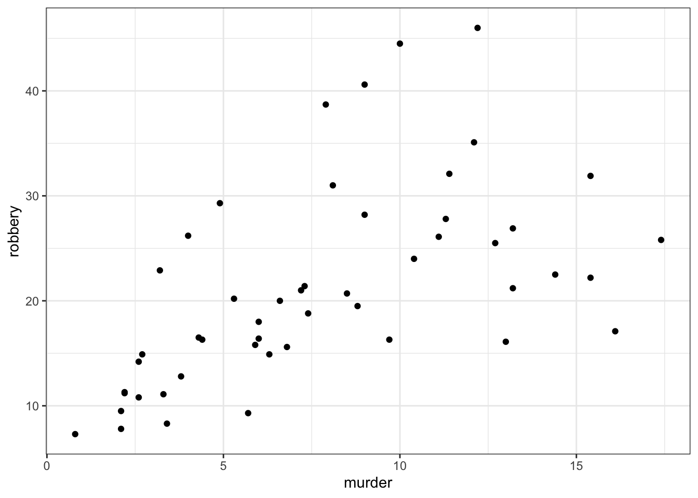
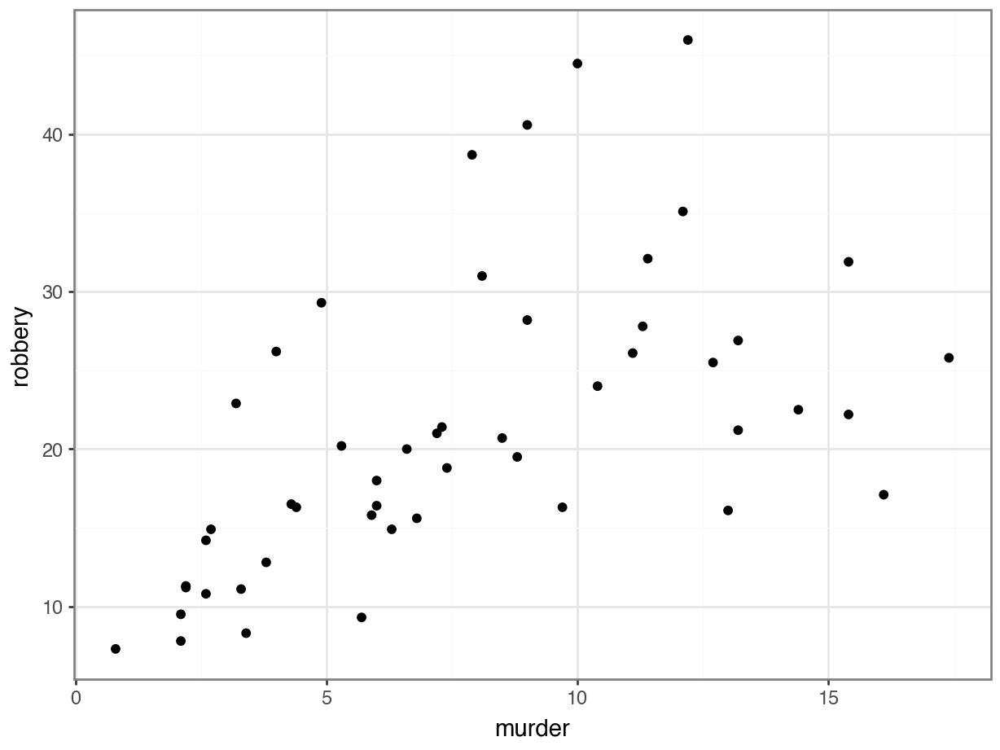
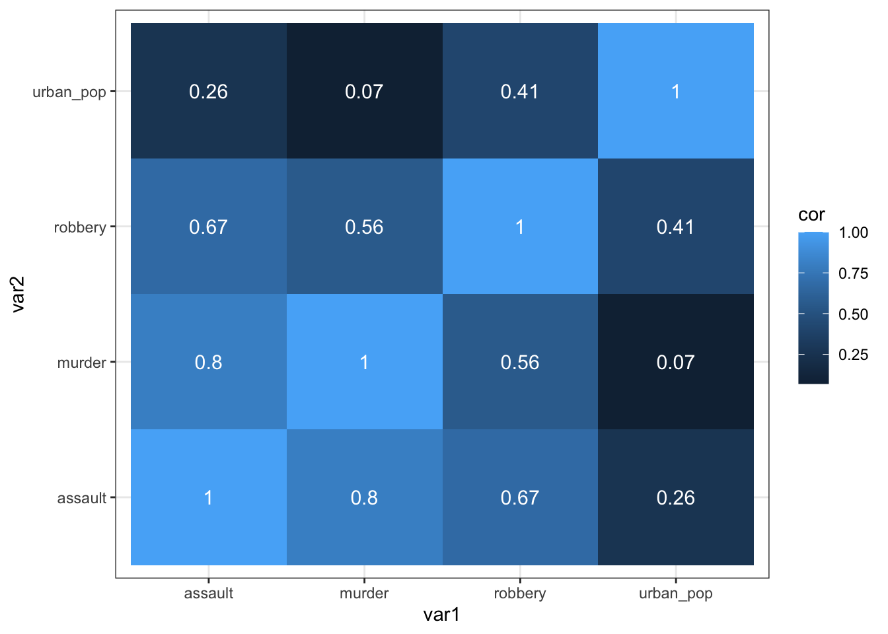

Correlations
Questions
- What are correlation coefficients?
- What kind of correlation coefficients are there and when do I use them?
Objectives
- Be able to calculate correlation coefficients in R or Python
- Use visual tools to explore correlations between variables
- Know the limitations of correlation coefficients
Libraries and functions
Libraries
# A collection of R packages designed for data science
library(tidyverse)
# Converts stats functions to a tidyverse-friendly format
library(rstatix)
# Creates diagnostic plots using ggplot2
library(ggResidpanel)
# A package for exploring correlations in R
library(corrr)Functions
# Creates diagnostic plots
ggResidpanel::resid_panel()Purpose and aim
Correlation refers to the relationship of two variables (or data sets) to one another. Two data sets are said to be correlated if they are not independent from one another. Correlations can be useful because they can indicate if a predictive relationship may exist. However just because two data sets are correlated does not mean that they are causally related.
Data and hypotheses
We will use the USArrests data set for this example. This rather bleak data set contains statistics in arrests per 100,000 residents for assault, murder and robbery in each of the 50 US states in 1973, alongside the proportion of the population who lived in urban areas at that time. USArrests is a data frame with 50 observations of five variables: state, murder, assault, urban_pop and robbery.
We will be using these data to explore if there are correlations between these variables.
The data are stored in the file data/CS3-usarrests.csv.
Summarise and visualise
First, we load the data:
# load the data
USArrests <- read_csv("data/CS3-usarrests.csv")
# have a look at the data
USArrests# A tibble: 50 × 5
state murder assault urban_pop robbery
<chr> <dbl> <dbl> <dbl> <dbl>
1 Alabama 13.2 236 58 21.2
2 Alaska 10 263 48 44.5
3 Arizona 8.1 294 80 31
4 Arkansas 8.8 190 50 19.5
5 California 9 276 91 40.6
6 Colorado 7.9 204 78 38.7
7 Connecticut 3.3 110 77 11.1
8 Delaware 5.9 238 72 15.8
9 Florida 15.4 335 80 31.9
10 Georgia 17.4 211 60 25.8
# … with 40 more rowsWe can create a visual overview of the potential correlations that might exist between the variables. For this, we use the corrr package.
Make sure to install the package, if you haven’t done so already:
install.packages("corrr")and then load it:
library(corrr)We can only calculate correlations between numerical variables, so we have to deselect the state variable. Next, we calculate the correlations with correlate(). We shave() off the redundant top results (murder vs assault is the same as assault vs murder) and plot the result using rplot().
# create correlation graph
USArrests %>%
select(-state) %>%
correlate() %>%
shave() %>%
rplot()
Correlation method: 'pearson'
Missing treated using: 'pairwise.complete.obs'Don't know how to automatically pick scale for object of type noquote. Defaulting to continuous.
The output tells us that the correlation method used is pearson (see below) and that only paired observations without missing values are taken into account.
On the right there is a scale of the strength of the correlation.
First, we load the data:
# load the data
USArrests_r <- read.csv("data/CS3-usarrests.csv")
# and have a look at the data
head(USArrests_r) state murder assault urban_pop robbery
1 Alabama 13.2 236 58 21.2
2 Alaska 10.0 263 48 44.5
3 Arizona 8.1 294 80 31.0
4 Arkansas 8.8 190 50 19.5
5 California 9.0 276 91 40.6
6 Colorado 7.9 204 78 38.7We can only calculate correlations between numerical variables, so we have to deselect the state variable.
We can load the data with an extra argument, row.names = 1. This will instruct R to load the data but use first column (state) as row names:
# load the data
USArrests_r <- read.csv("data/CS3-usarrests.csv", row.names = 1)
# have a look at the data
head(USArrests_r) murder assault urban_pop robbery
Alabama 13.2 236 58 21.2
Alaska 10.0 263 48 44.5
Arizona 8.1 294 80 31.0
Arkansas 8.8 190 50 19.5
California 9.0 276 91 40.6
Colorado 7.9 204 78 38.7We can visualise the data with the pairs() function. This function creates a matrix of scatter plots that we can use to look for correlations. Every combination of variables appears twice (e.g. murder vs assault is the same as assault vs murder), so we use the lower.panel = NULL argument to only visualise the unique combinations.
# create matrix of scatter plots
pairs(USArrests_r, lower.panel = NULL)
From the visual inspection we can see that there appears to be a slight positive correlation between all pairs of variables, although this may be very weak in some cases (murder and urban_pop for example).
The method we used above is Pearson’s r. This is a measure of the linear correlation between two variables. It has a value between -1 and +1, where +1 means a perfect positive correlation, -1 means a perfect negative correlation and 0 means no correlation at all.
There are other correlation coefficients, most notably the Spearman’s rank correlation coefficient, a non-parametric measure of rank correlation and is generally less sensitive to outliers.
Implement and interpret test
A bit earlier we created a graph that visualised the possible correlations between the different variables. Underlying that were the values of Pearson’s r. If we want to get the actual values, we can do the following:
# calculate correlation matrix
USArrests %>%
select(-state) %>%
correlate() %>%
shave()
Correlation method: 'pearson'
Missing treated using: 'pairwise.complete.obs'# A tibble: 4 × 5
term murder assault urban_pop robbery
<chr> <dbl> <dbl> <dbl> <dbl>
1 murder NA NA NA NA
2 assault 0.802 NA NA NA
3 urban_pop 0.0696 0.259 NA NA
4 robbery 0.564 0.665 0.411 NAcor(USArrests_r, method = "pearson") murder assault urban_pop robbery
murder 1.00000000 0.8018733 0.06957262 0.5635788
assault 0.80187331 1.0000000 0.25887170 0.6652412
urban_pop 0.06957262 0.2588717 1.00000000 0.4113412
robbery 0.56357883 0.6652412 0.41134124 1.0000000- The first argument is a matrix or a data frame
- The argument
methodtells R which correlation coefficient to use (pearson(default),kendall, orspearman)
The table gives the correlation coefficient between each pair of variables in the data frame. The most correlated variables are murder and assault with an \(r\) value of 0.80. This appears to agree well with the set plots that we produced earlier.
Exercise: Pearson’s r for USA state data
Pearson’s correlation for USA state data
We will use the data from the file data/CS3-statedata.csv data set for this exercise. This rather more benign data set contains information on more general properties of each US state, such as population (1975), per capita income (1974), illiteracy proportion (1970), life expectancy (1969), murder rate per 100,000 people (there’s no getting away from it), percentage of the population who are high-school graduates, average number of days where the minimum temperature is below freezing between 1931 and 1960, and the state area in square miles. The data set contains 50 rows and 8 columns, with column names: population, income, illiteracy, life_exp, murder, hs_grad, frost and area.
Visually identify 3 different pairs of variables that appear to be
- the most positively correlated
- the most negatively correlated
- not correlated at all
Calculate Pearson’s r for all variable pairs and see how well you were able to identify correlation visually.
Look at the help page of the stretch() function from the corrr package to help extract the correct values from the correlation matrix.
Look at the help page of the as.table() function to help extract the correct values from the correlation matrix. Combine this with the as.data.frame() function.
Visually determining the most negative/positively and uncorrelated pairs of variables:
USAstate <- read_csv("data/CS3-statedata.csv")
# have a look at the data
USAstate# A tibble: 50 × 9
state population income illiteracy life_exp murder hs_grad frost area
<chr> <dbl> <dbl> <dbl> <dbl> <dbl> <dbl> <dbl> <dbl>
1 Alabama 3615 3624 2.1 69.0 15.1 41.3 20 50708
2 Alaska 365 6315 1.5 69.3 11.3 66.7 152 566432
3 Arizona 2212 4530 1.8 70.6 7.8 58.1 15 113417
4 Arkansas 2110 3378 1.9 70.7 10.1 39.9 65 51945
5 California 21198 5114 1.1 71.7 10.3 62.6 20 156361
6 Colorado 2541 4884 0.7 72.1 6.8 63.9 166 103766
7 Connecticut 3100 5348 1.1 72.5 3.1 56 139 4862
8 Delaware 579 4809 0.9 70.1 6.2 54.6 103 1982
9 Florida 8277 4815 1.3 70.7 10.7 52.6 11 54090
10 Georgia 4931 4091 2 68.5 13.9 40.6 60 58073
# … with 40 more rows# visualise the correlations
USAstate %>%
select(-state) %>%
correlate() %>%
shave() %>%
rplot()
Correlation method: 'pearson'
Missing treated using: 'pairwise.complete.obs'Don't know how to automatically pick scale for object of type noquote. Defaulting to continuous.
USAstate_r <- read.csv("data/CS3-statedata.csv",
row.names = 1)
# have a look at the data
head(USAstate_r) population income illiteracy life_exp murder hs_grad frost area
Alabama 3615 3624 2.1 69.05 15.1 41.3 20 50708
Alaska 365 6315 1.5 69.31 11.3 66.7 152 566432
Arizona 2212 4530 1.8 70.55 7.8 58.1 15 113417
Arkansas 2110 3378 1.9 70.66 10.1 39.9 65 51945
California 21198 5114 1.1 71.71 10.3 62.6 20 156361
Colorado 2541 4884 0.7 72.06 6.8 63.9 166 103766pairs(USAstate_r, lower.panel = NULL)
It looks like:
illiteracyandmurderare the most positively correlated pairlife_expandmurderare the most negatively correlated pairpopulationandareaare the least correlated pair
We can explore that numerically, by doing the following:
We can use the corrr::stretch() function. This converts the correlation matrix into a long format. If we use the remove.dups = TRUE argument (it is FALSE by default) then the duplicate correlations are removed.
# calculate the correlation matrix
# convert into long format, omitting
# missing values and duplicates
USAstate_cor <- USAstate %>%
select(-state) %>%
correlate() %>%
stretch(remove.dups = TRUE) %>%
drop_na()Now we can extract the values we’re interested in:
# most positively correlated pair
USAstate_cor %>%
filter(r == max(r))# A tibble: 1 × 3
x y r
<chr> <chr> <dbl>
1 illiteracy murder 0.703# most negatively correlated pair
USAstate_cor %>%
filter(r == min(r))# A tibble: 1 × 3
x y r
<chr> <chr> <dbl>
1 life_exp murder -0.781# least correlated pair
USAstate_cor %>%
filter(r == min(abs(r)))# A tibble: 1 × 3
x y r
<chr> <chr> <dbl>
1 population area 0.0225Note that we use the minimum absolute value (with the abs() function) to find the least correlated pair.
First, we need to create the pairwise comparisons, with the relevant Pearson’s \(r\) values:
USAstate_r_cor <- USAstate_r |>
# create the correlation matrix
cor(method = "pearson") |>
# build a contingency table
as.table() |>
# and create a dataframe
as.data.frame()
# and have a look
USAstate_r_cor Var1 Var2 Freq
1 population population 1.00000000
2 income population 0.20822756
3 illiteracy population 0.10762237
4 life_exp population -0.06805195
5 murder population 0.34364275
6 hs_grad population -0.09848975
7 frost population -0.33215245
8 area population 0.02254384
9 population income 0.20822756
10 income income 1.00000000
11 illiteracy income -0.43707519
12 life_exp income 0.34025534
13 murder income -0.23007761
14 hs_grad income 0.61993232
15 frost income 0.22628218
16 area income 0.36331544
17 population illiteracy 0.10762237
18 income illiteracy -0.43707519
19 illiteracy illiteracy 1.00000000
20 life_exp illiteracy -0.58847793
21 murder illiteracy 0.70297520
22 hs_grad illiteracy -0.65718861
23 frost illiteracy -0.67194697
24 area illiteracy 0.07726113
25 population life_exp -0.06805195
26 income life_exp 0.34025534
27 illiteracy life_exp -0.58847793
28 life_exp life_exp 1.00000000
29 murder life_exp -0.78084575
30 hs_grad life_exp 0.58221620
31 frost life_exp 0.26206801
32 area life_exp -0.10733194
33 population murder 0.34364275
34 income murder -0.23007761
35 illiteracy murder 0.70297520
36 life_exp murder -0.78084575
37 murder murder 1.00000000
38 hs_grad murder -0.48797102
39 frost murder -0.53888344
40 area murder 0.22839021
41 population hs_grad -0.09848975
42 income hs_grad 0.61993232
43 illiteracy hs_grad -0.65718861
44 life_exp hs_grad 0.58221620
45 murder hs_grad -0.48797102
46 hs_grad hs_grad 1.00000000
47 frost hs_grad 0.36677970
48 area hs_grad 0.33354187
49 population frost -0.33215245
50 income frost 0.22628218
51 illiteracy frost -0.67194697
52 life_exp frost 0.26206801
53 murder frost -0.53888344
54 hs_grad frost 0.36677970
55 frost frost 1.00000000
56 area frost 0.05922910
57 population area 0.02254384
58 income area 0.36331544
59 illiteracy area 0.07726113
60 life_exp area -0.10733194
61 murder area 0.22839021
62 hs_grad area 0.33354187
63 frost area 0.05922910
64 area area 1.00000000Is this method obvious? No! Some create Googling led to Stackoverflow and here we are. But, it does give us what we need.
Now that we have the paired comparisons, we can extract the relevant data:
# first we remove the same-pair correlations
USAstate_r_cor <- USAstate_r_cor |>
# remove the same-pair correlations
subset(Freq != 1)
USAstate_r_cor[, max(USAstate_r_cor$Freq)]data frame with 0 columns and 56 rows# most positively correlated pair
USAstate_r_cor[which.max(USAstate_r_cor$Freq), ] Var1 Var2 Freq
21 murder illiteracy 0.7029752# most negatively correlated pair
USAstate_r_cor[which.min(USAstate_r_cor$Freq), ] Var1 Var2 Freq
29 murder life_exp -0.7808458# least correlated pair
USAstate_r_cor[which.min(abs(USAstate_r_cor$Freq)), ] Var1 Var2 Freq
8 area population 0.02254384Note that we use the minimum absolute value (with the abs() function) to find the least correlated pair.
Spearman’s rank correlation coefficient
This test first calculates the rank of the numerical data (i.e. their position from smallest (or most negative) to the largest (or most positive)) in the two variables and then calculates Pearson’s product moment correlation coefficient using the ranks. As a consequence, this test is less sensitive to outliers in the distribution.
# calculate correlation matrix
USArrests %>%
select(-state) %>%
correlate(method = "spearman") %>%
shave()
Correlation method: 'spearman'
Missing treated using: 'pairwise.complete.obs'# A tibble: 4 × 5
term murder assault urban_pop robbery
<chr> <dbl> <dbl> <dbl> <dbl>
1 murder NA NA NA NA
2 assault 0.817 NA NA NA
3 urban_pop 0.107 0.275 NA NA
4 robbery 0.679 0.714 0.438 NAcor(USArrests_r, method = "spearman") murder assault urban_pop robbery
murder 1.0000000 0.8172735 0.1067163 0.6794265
assault 0.8172735 1.0000000 0.2752133 0.7143681
urban_pop 0.1067163 0.2752133 1.0000000 0.4381068
robbery 0.6794265 0.7143681 0.4381068 1.0000000Exercise: State data (Spearman)
Spearman’s correlation for USA state data
Calculate Spearman’s correlation coefficient for the data/CS3-statedata.csv data set.
Which variable’s correlations are affected most by the use of the Spearman’s rank compared with Pearson’s r? Hint: think of a way to address this question programmatically.
Thinking about the variables, can you explain why this might this be?
# calculate correlation matrix
USAstate %>%
select(-state) %>%
correlate(method = "spearman") %>%
shave()
Correlation method: 'spearman'
Missing treated using: 'pairwise.complete.obs'# A tibble: 8 × 9
term population income illiteracy life_exp murder hs_grad frost area
<chr> <dbl> <dbl> <dbl> <dbl> <dbl> <dbl> <dbl> <dbl>
1 population NA NA NA NA NA NA NA NA
2 income 0.125 NA NA NA NA NA NA NA
3 illiteracy 0.313 -0.315 NA NA NA NA NA NA
4 life_exp -0.104 0.324 -0.555 NA NA NA NA NA
5 murder 0.346 -0.217 0.672 -0.780 NA NA NA NA
6 hs_grad -0.383 0.510 -0.655 0.524 -0.437 NA NA NA
7 frost -0.459 0.197 -0.683 0.298 -0.544 0.399 NA NA
8 area -0.121 0.0571 -0.250 0.128 0.106 0.439 0.112 NAcor(USAstate_r, method = "spearman") population income illiteracy life_exp murder hs_grad
population 1.0000000 0.12460984 0.3130496 -0.1040171 0.3457401 -0.3833649
income 0.1246098 1.00000000 -0.3145948 0.3241050 -0.2174623 0.5104809
illiteracy 0.3130496 -0.31459482 1.0000000 -0.5553735 0.6723592 -0.6545396
life_exp -0.1040171 0.32410498 -0.5553735 1.0000000 -0.7802406 0.5239410
murder 0.3457401 -0.21746230 0.6723592 -0.7802406 1.0000000 -0.4367330
hs_grad -0.3833649 0.51048095 -0.6545396 0.5239410 -0.4367330 1.0000000
frost -0.4588526 0.19686382 -0.6831936 0.2983910 -0.5438432 0.3985351
area -0.1206723 0.05709484 -0.2503721 0.1275002 0.1064259 0.4389752
frost area
population -0.4588526 -0.12067227
income 0.1968638 0.05709484
illiteracy -0.6831936 -0.25037208
life_exp 0.2983910 0.12750018
murder -0.5438432 0.10642590
hs_grad 0.3985351 0.43897520
frost 1.0000000 0.11228778
area 0.1122878 1.00000000In order to determine which variables are most affected by the choice of Spearman vs Pearson you could just plot both matrices out side by side and try to spot what was going on, but one of the reasons we’re using programming languages is that we can be a bit more programmatic about these things. Also, our eyes aren’t that good at processing and parsing this sort of information display. A better way would be to somehow visualise the data.
We’re going to subtract two correlation matrices from one another. This only works on numerical data, so we do the following:
- calculate the correlations
- remove the variable names
- subtract the two matrices
- find the absolute differences (we do not care about the direction of change)
- put back the variable names
# create Pearson's r correlation matrix
USAstate_pearson <- USAstate %>%
select(-state) %>%
correlate(method = "pearson") %>%
shave() %>%
select(-term)
Correlation method: 'pearson'
Missing treated using: 'pairwise.complete.obs'# create Spearmans correlation matrix
USAstate_spearman <- USAstate %>%
select(-state) %>%
correlate(method = "spearman") %>%
shave() %>%
select(-term)
Correlation method: 'spearman'
Missing treated using: 'pairwise.complete.obs'USAstate_diff <- USAstate_pearson - USAstate_spearman
# get the row names of the correlation matrix
USAstate_colnames <- USAstate %>%
select(-state) %>%
correlate() %>%
select(term)
Correlation method: 'pearson'
Missing treated using: 'pairwise.complete.obs'# combine the two tables
# taking the absolute values of the differences
# and plot
bind_cols(USAstate_colnames, abs(USAstate_diff)) %>%
rplot()Don't know how to automatically pick scale for object of type noquote. Defaulting to continuous.
corPear <- cor(USAstate_r, method = "pearson")
corSpea <- cor(USAstate_r, method = "spearman")
corDiff <- corPear - corSpeaAgain, we could now just look at a grid of 64 numbers and see if we can spot the biggest differences, but our eyes aren’t that good at processing and parsing this sort of information display. A better way would be to somehow visualise the data. We can do that using some R plotting functions, heatmap() to be exact. The heatmap() function has a lot of features that we don’t need and so I’m not going to go into it in detail here. The main reason I’m using it is that it displays matrices the right way round (other plotting functions display matrices rotated by 90 degrees) and automatically labels the rows and columns.
heatmap(abs(corDiff), symm = TRUE, Rowv = NA)
The abs() function calculates the absolute value (i.e. just the magnitude) of the matrix values. This is just because I only care about situations where the two correlation coefficients are different from each other but I don’t care which is the larger. The symm argument tells the function that we have a symmetric matrix and in conjunction with the Rowv = NA argument stops the plot from reordering the rows and columns. The Rowv = NA argument also stops the function from adding dendrograms to the margins of the plot.
The plot itself is coloured from yellow, indicating the smallest values (which in this case correspond to no difference in correlation coefficients), through orange to dark red, indicating the biggest values (which in this case correspond to the variables with the biggest difference in correlation coefficients).
The plot is symmetric along the leading diagonal (hopefully for obvious reasons) and we can see that the majority of squares are light yellow in colour, which means that there isn’t much difference between Spearman and Pearson for the vast majority of variables. The squares appear darkest when we look along the area row/column suggesting that there’s a big difference in the correlation coefficients there.
All in all there is not a huge difference in correlation coefficients, since the values are all quite small. Most of the changes occur along the area variable. One possible explanation could be that certain states with a large area have a relatively large effect on the Pearson’s r coefficient. For example, Alaska has an area that is over twice as big as the next state - Texas.
If we’d look a bit closer then we would find for area and income that Pearson gives a value of 0.36, a slight positive correlation, whereas Spearman gives a value of 0.057, basically uncorrelated.
This means that this is basically ignored by Spearman.
Well done, Mr. Spearman.
Key points
- Correlation is the degree to which two variables are linearly related
- Correlation does not imply causation
- We can visualise correlations by plotting variables against each other or creating heatmap-type plots of the correlation coefficients
- Two main correlation coefficients are Pearson’s r and Spearman’s rank, with Spearman’s rank being less sensitive to outliers
Correlations Correlations Home Setup Materials Licensed CC BY 4.0  Bioinformatics Training Facility
Bioinformatics Training Facility
Correlations Correlations Correlations